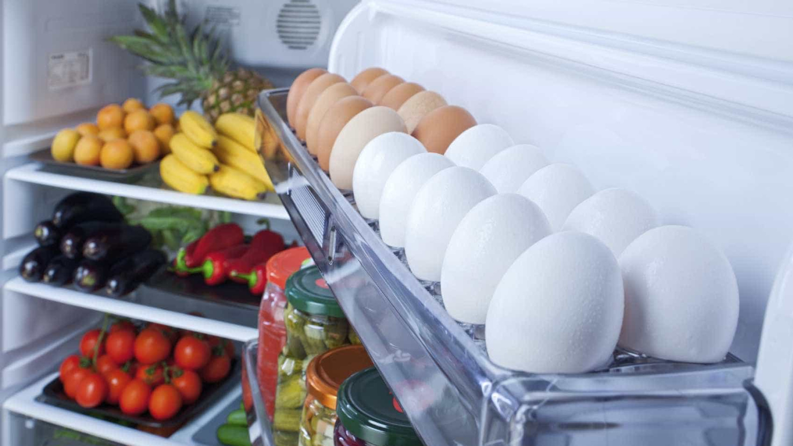

Vorratsschrank
Optimale Lagerung von Trockenwaren
Ein gut organisierter Vorratsschrank hilft Ihnen, immer die richtigen Zutaten zur Hand zu haben und Lebensmittelverschwendung zu vermeiden.
Organisation nach Kategorien
- Getreideprodukte: Nudeln, Reis, Mehl, Haferflocken
- Konserven: Tomaten, Bohnen, Mais, Fisch
- Gewürze: Salz, Pfeffer, getrocknete Kräuter
- Backzutaten: Zucker, Backpulver, Vanille
Praktische Tipps
- Verwenden Sie luftdichte Behälter für Mehl und Zucker
- Beschriften Sie Behälter mit Inhalt und Ablaufdatum
- Organisieren Sie nach Häufigkeit der Nutzung
- Prüfen Sie regelmäßig Ablaufdaten